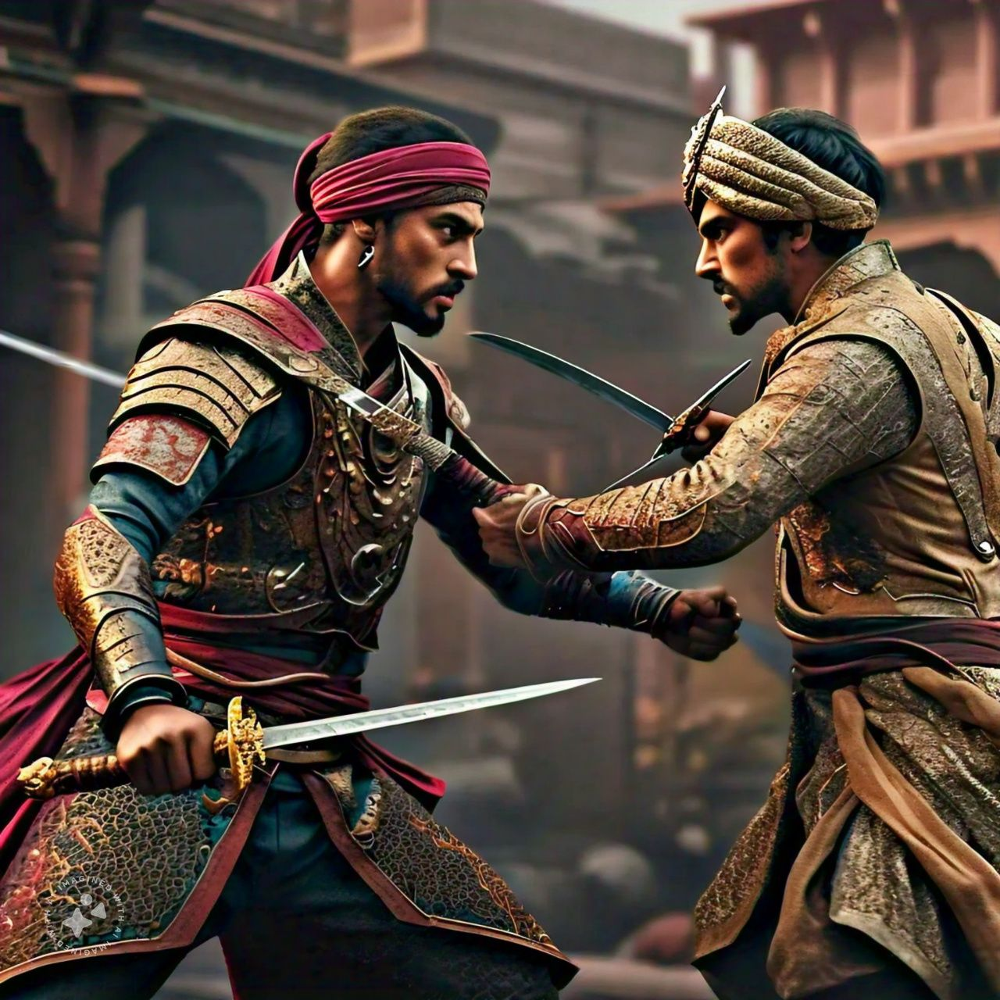

On June 6, 1674, Shivaji Maharaj was crowned at Raigad Fort in a historic event that finally and formally made him the Chhatrapati of the Maratha Empire, transforming him from a regional power into a full-fledged sovereign state. Accomplished with all the rituals of Hindu tradition, this occasion was presided over by Gaga Bhatt and established Shivaji's authority since it legitimized his rule. Besides this, Shivaji promulgated the principle of Janta Raj or "People's Rule," which aimed at decentralization, welfare, and representation of common people in governance. In this model, he ensured that even the local leaders and common people played an important role in administration in order to bring stability and prosperity in his empire. Together, the coronation and Janta Raj showcased Shivaji Maharaj's commitment to effective and just governance.